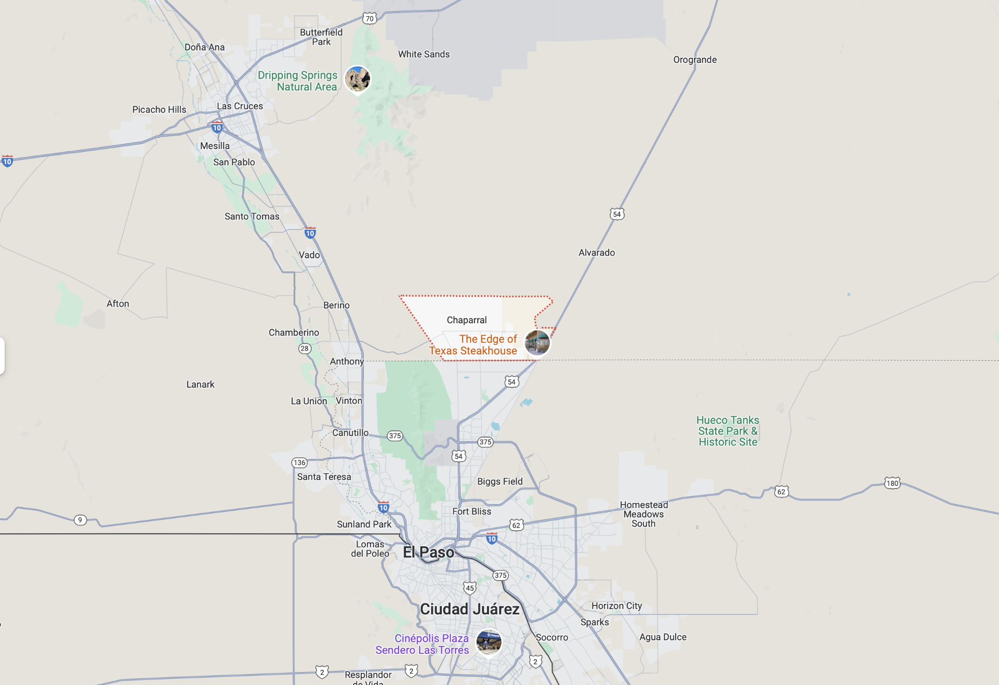

Welcome to My Personal Website
Welcome, I'm Erick Lopez, this is a space where I showcase a little about myself such as interests, and ways to get in touch with me. Feel free to explore the pages linked above!
Short Biography BL BLA
Hi, I'm Erick Lopez! I'm 22 years old and currently living in Chaparral, NM, a small town just 40 minutes from Las Cruces, where I was born on December 17, 2002. My journey into technology started early, thanks to my older brother, who completed both his Bachelor's and Master's degrees in Computer Science at the University of Texas at El Paso. Watching his achievements sparked my own passion for computers and technology.
Right now, I'm in my final semester at New Mexico State University, working towards my Bachelor's degree in Computer Science. It's been an exciting four years, and I'm eager to wrap up this chapter and take the next step in my career. My goal is to become a software developer and work with innovative companies where I can contribute to building the next big thing in technology.
Growing up, I was fascinated by how video games worked behind the scenes—how they were created using code. This curiosity has driven me throughout my studies and continues to fuel my passion for learning and development. I can't wait to see where this journey takes me!
My life’s been filled with stories, both challenging and rewarding. Along the way, I’ve had the opportunity to help build and grow businesses with my family—experiences that have shaped who I am today. We’ve worked on everything from a party rental business to a jewelry brand that’s steadily growing through social media. We're excited to expand our reach, offering our products to people across the U.S. and Mexico. I'll share more about this in the Jobs section, so stay tuned!
Sports have always been a big part of my life. As a kid, I struggled with asthma, but thanks to sports, especially soccer and running, I’ve been able to overcome that challenge. I’ve always been passionate about athletics, and I continue to pursue them in my free time. You can read more about my soccer journey in the Hobbies section!
Overall, my family has been a constant source of support throughout my journey. Their encouragement has played a huge role in my growth, and I’ll be sharing more about them in the Family section. I invite you to explore more about my passions and projects across this site!